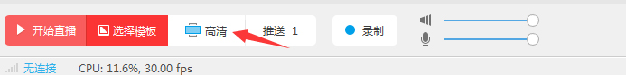
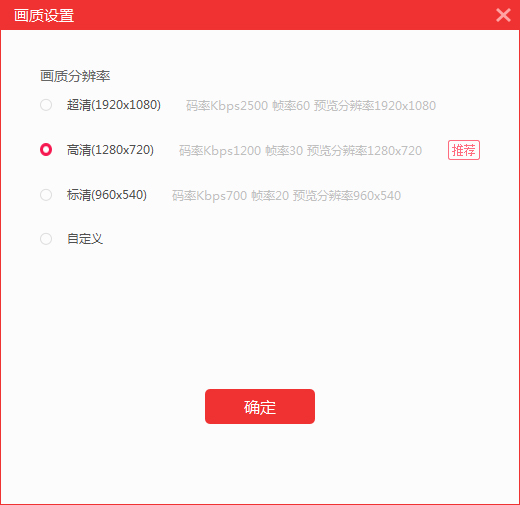
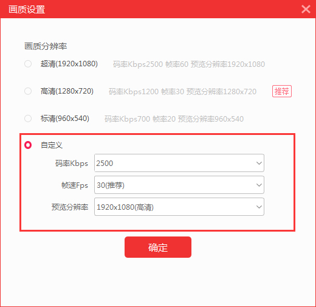

1 该设置功能用于主播根据环境自主调节画面分辨率，点击控制台画面设置按钮即可打开设置窗口进行设置，如下图所示位置。

2 画面设置窗口，主播可自行选择需要的分辨率，也可以自定义分辨率选择好码率帧数和预览分辨率点击确定按钮即可。

3 预览分辨率：用户可根据需要，自由设置直播画面的编码和画质情况：分辨率越高则直播画面越清晰；
4 码率：根据主播网络情况调整直播精度，码率越大，直播影像越接近原始文件；
5 帧数（FPS）：一般为20-30，数值越高直播画面越流畅：
